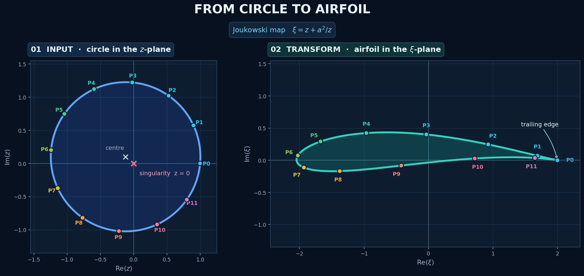
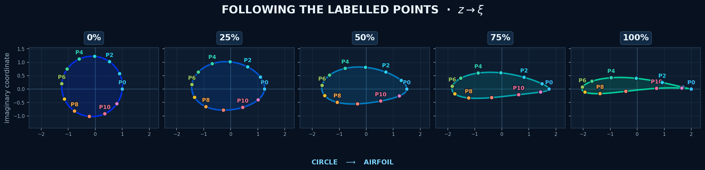

Joukowski transformation#
The Joukowski transformation turns a circle in the complex \(z\)-plane into an airfoil-like curve in the complex \(\xi\)-plane. This notebook makes the mapping visible by following the same labelled points \(P_0,P_1,\ldots\) before and after the transformation.
The colours and labels are identities: a blue \(P_3\) in the \(z\)-plane is the very same point after it appears in the \(\xi\)-plane.
💙 1. The transformation#
For a non-zero complex number \(z=x+iy\), the Joukowski map is
where \(a>0\) controls the scale. Writing \(\xi=u+iv\), every point \((x,y)\) in the first plane obtains a new position \((u,v)\) in the second plane.
We use a circle whose centre is slightly left of and above the origin. The circle passes through \(z=a\), where
That critical point becomes the sharp trailing edge of the airfoil. The circle must not pass through \(z=0\), because the transformation is undefined there.
💙 2. The same points in two planes#
The left panel is the input geometry. The right panel is its image under \(J\). Compare labels—not just locations—to track the mapping.

What should we notice?#
\(P_0\) begins at \(z=a\) and maps to \(\xi=2a\). It becomes the sharp trailing edge.
Points that are nearly evenly spaced on the circle are not evenly spaced after the map. The transformation stretches some regions and compresses others.
The offset centre makes the upper and lower surfaces asymmetric, producing camber.
The order of the labels is preserved as we travel around the boundary.
💙 3. Visualising the movement#
The Joukowski map sends each point directly from \(z\) to \(\xi\). To make that change easier to see, the next figure adds illustrative in-between frames
These intermediate curves are a visual interpolation, not additional Joukowski transformations.

💙 4. Numerical coordinates#
A few coordinates confirm exactly what the pictures show.
import pandas as pd
coordinate_table = pd.DataFrame({
"point": labels,
"Re(z)": z_points.real,
"Im(z)": z_points.imag,
"Re(xi)": xi_points.real,
"Im(xi)": xi_points.imag,
}).round(3)
coordinate_table
| point | Re(z) | Im(z) | Re(xi) | Im(xi) | |
|---|---|---|---|---|---|
| 0 | P0 | 1.000 | 0.000 | 2.000 | 0.000 |
| 1 | P1 | 0.900 | 0.573 | 1.690 | 0.070 |
| 2 | P2 | 0.527 | 1.020 | 0.926 | 0.246 |
| 3 | P3 | -0.020 | 1.220 | -0.033 | 0.401 |
| 4 | P4 | -0.593 | 1.120 | -0.963 | 0.423 |
| 5 | P5 | -1.040 | 0.747 | -1.674 | 0.291 |
| 6 | P6 | -1.240 | 0.200 | -2.026 | 0.073 |
| 7 | P7 | -1.140 | -0.373 | -1.932 | -0.114 |
| 8 | P8 | -0.767 | -0.820 | -1.375 | -0.169 |
| 9 | P9 | -0.220 | -1.020 | -0.422 | -0.083 |
| 10 | P10 | 0.353 | -0.920 | 0.717 | 0.027 |
| 11 | P11 | 0.800 | -0.547 | 1.652 | 0.036 |
Summary#
The Joukowski transformation is a compact example of how a simple formula in complex analysis can create useful geometry. By keeping each \(P_k\) label and colour unchanged, we can see that the airfoil is not a newly drawn object: it is the original circle, point by point, after the map \(J(z)=z+a^2/z\).